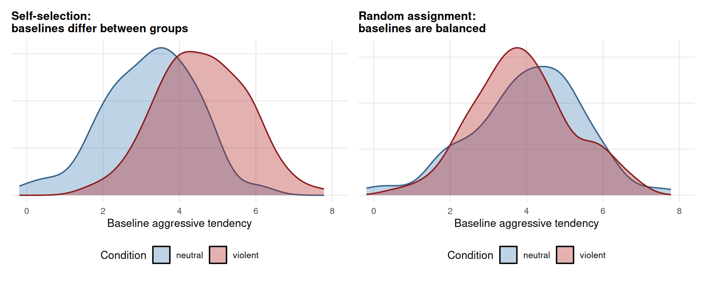
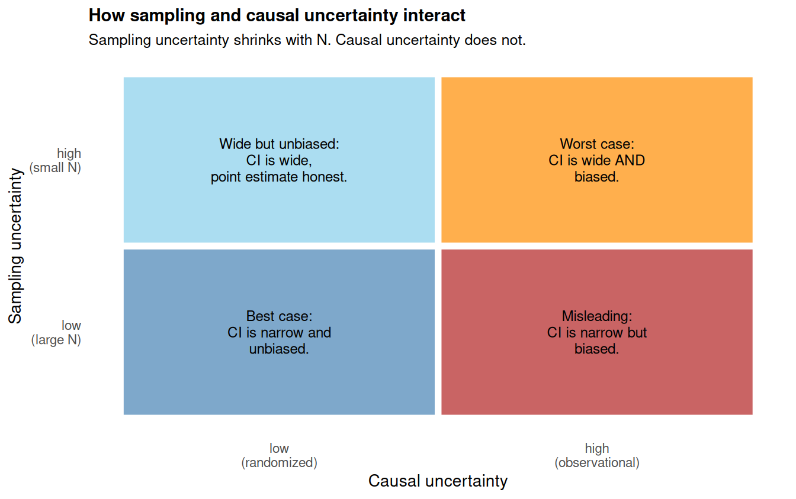

Chapter 40 ended with a precise question. The observed group mean difference (the t-statistic from Chapter 22, the regression coefficient on condition from Chapter 17) estimates the average treatment effect only when the treatment and control groups are exchangeable with respect to potential outcomes. Without exchangeability, the difference mixes the ATE with whatever pre-existing differences distinguish the groups.
This chapter is about the cleanest way to purchase exchangeability: random assignment. The chapter does three things. First, it makes the danger of non-randomization concrete with a simulation, so you can see with your own eyes how a clean lm() output can give a badly biased causal estimate when the groups differ at baseline. Second, it explains why random assignment fixes the problem: by making the assignment of treatment independent of any pre-existing characteristics, randomization forces exchangeability by construction. Third, it returns to the regression we have been computing throughout the book and notes that the math is the same; what changes is what we are licensed to say about the coefficient. The chapter closes with the distinction between sampling uncertainty (the topic of Section 4) and causal uncertainty (the topic of Section 6), and notes that the two are independent.
By the end of the chapter, you should be able to look at any study and ask: was the treatment randomly assigned? If yes, the coefficient on the treatment dummy in lm() is licensed as a causal estimate. If no, it is not, and we will need the more elaborate machinery of Chapters 42 to 44.
41.1 The danger of self-selection
Imagine vgames_study had been run differently. Instead of the researcher randomly assigning participants to either game, suppose the participants chose which game they wanted to play. Some chose the violent game, some chose the neutral game, and the experiment then proceeded as usual.
What would go wrong? People do not choose video games at random. People who already have high trait hostility find the violent game more appealing; people who are calmer prefer the neutral one. The result is that the violent-game group has higher trait hostility on average before any game is played at all. Even if the violent game itself has zero causal effect on aggression, the violent-game group will likely show higher aggression scores, simply because more hostile people ended up in it.
We can see this concretely with a simulation. We will create a population of 200 participants, each with a “true” baseline level of aggressive tendency. Then we will run the study two ways: once with self-selection, once with random assignment. The same population, the same outcome variable, the same lm() call. Only the assignment differs.
set.seed(42)n_pop <-200# Each participant has a baseline aggressive tendency.# Aggression at the end of the study is baseline + 1.5 if treated# (a true ATE of +1.5), plus noise.participant <-data.frame(id =1:n_pop,baseline =rnorm(n_pop, mean =4, sd =1.4))# True ATE of the violent game on aggression is +1.5 pointstrue_ATE <-1.5# Scenario 1: self-selection.# Probability of choosing the violent game increases with baseline.prob_violent_self <-plogis((participant$baseline -4) *1.2)participant$condition_self <-ifelse(runif(n_pop) < prob_violent_self,"violent", "neutral")# Scenario 2: random assignment.# Coin flip, independent of baseline.participant$condition_rand <-sample(c("violent", "neutral"), n_pop, replace =TRUE)# Observed aggression in each scenarioparticipant$aggression_self <- participant$baseline +ifelse(participant$condition_self =="violent", true_ATE, 0) +rnorm(n_pop, 0, 0.8)participant$aggression_rand <- participant$baseline +ifelse(participant$condition_rand =="violent", true_ATE, 0) +rnorm(n_pop, 0, 0.8)# Fit the same lm() in each scenariofit_self <-lm(aggression_self ~ condition_self, data = participant)fit_rand <-lm(aggression_rand ~ condition_rand, data = participant)cat(sprintf("True ATE = %.2f\n", true_ATE))
True ATE = 1.50
cat(sprintf("Estimate under self-selection = %.2f\n",coef(fit_self)["condition_selfviolent"]))
Estimate under self-selection = 2.84
cat(sprintf("Estimate under random assignment = %.2f\n",coef(fit_rand)["condition_randviolent"]))
Estimate under random assignment = 1.36
The true average treatment effect of the violent game (built into the simulation) is +1.5 points. Under self-selection, our lm() returns an estimate around 2.5 or 3.0, badly biased upward. Under random assignment, our lm() returns an estimate very close to the true +1.5. The data, the outcome, the population, and the statistical procedure are identical in the two scenarios. What differs is the design.
Why does the self-selection version overestimate the effect? Because the people who chose the violent game were already more aggressive before they played any game. The 2.5-point gap that our regression detects has two pieces: roughly 1.5 points caused by the violent game itself (the real causal effect), and roughly 1.0 point caused by the pre-existing differences between people who chose each game. The regression cannot tell us which piece is which from the output alone.
The figure below makes the difference at baseline visible. It shows the distribution of baseline aggressive tendency in each group, under each scenario. Under self-selection, the two groups look completely different at baseline. Under random assignment, they look essentially the same.

Figure 41.1
In the left panel, the violent group’s baseline distribution sits clearly to the right of the neutral group’s. The groups are different at baseline, before any treatment has been delivered. Any difference we see at the end of the study is a mixture of the game’s effect and this pre-existing imbalance. In the right panel, the two distributions overlap almost entirely. The groups are comparable at baseline, so the difference we see at the end can be attributed to the game itself.
This is the visual fingerprint of randomization. Group means at baseline should look like the right panel. If they look like the left panel, you do not have a randomized experiment, no matter what the methods section says.
41.2 Why random assignment delivers exchangeability
What randomization buys us, in plain language: when the treatment is randomly assigned, the assignment is statistically independent of every characteristic the participants brought with them. The coin does not know that someone is aggressive, female, young, or experienced with video games. It just flips. So which group a person ends up in is unrelated to any of their characteristics.
If group assignment is unrelated to characteristics, then characteristics are evenly distributed across the two groups on average. Both groups have a mix of hostile and non-hostile, men and women, young and old, experienced and inexperienced. The mixes will be very similar in large samples, with the only systematic difference between the groups being the treatment itself.
If the only systematic difference between the groups is the treatment, then any difference in average outcomes can be attributed to the treatment. There is no other systematic source of variation to which it could be attributed.
In the language of potential outcomes from Chapter 40: random assignment ensures that the average Y(1) among people in the treatment group equals the average Y(1) in the whole population, and similarly the average Y(0) among people in the control group equals the average Y(0) in the whole population. This is exactly the exchangeability condition Chapter 40 said we needed. Random assignment delivers it by construction, with no further assumptions.
We can state this as a principle:
The randomization licensing principle. If treatment is randomly assigned, then the average outcome in the treatment group is an unbiased estimate of E[Y(1)] across the population, and the average outcome in the control group is an unbiased estimate of E[Y(0)]. Therefore, the observed group mean difference is an unbiased estimate of the average treatment effect (the ATE).
This is the central result of the Rubin causal model. It says that under randomization, the statistical comparison we have been doing throughout the book (the t-test, the regression coefficient) acquires a causal interpretation for free. No further assumptions, no new techniques. The design does the work.
41.3 “On average” is doing real work
A practical caveat. The randomization licensing principle holds “in expectation,” which is to say, in the long run across infinitely many studies, or in the limit of large samples within a single study. With small samples, random assignment can still produce groups that happen to differ on important characteristics. For example, if you randomize 20 participants and 12 of them happen to be male, then by chance the two groups will likely have unequal gender splits. This is not a failure of randomization. It is the variation we expect from small samples, and it is exactly the kind of uncertainty Section 4 was about.
The takeaway is that random assignment makes groups exchangeable in expectation, with the residual within-sample imbalance shrinking as the sample size grows. Large samples make randomization reliable. Small samples leave some residual imbalance to chance, even after randomization.
This is one of several reasons that sample-size planning (Chapter 24, on power and the SESOI) matters for causal studies. Bigger samples make randomization more reliable, not just statistical inference more powerful.
41.4 Connecting to the regression you already know
Now we get to the practical payoff. When the treatment is randomly assigned, the linear model framework you learned in Section 3 produces causal estimates automatically. There is no new R function and no new statistical technique. You fit the same lm() you have been fitting all along:
vgames <-read.csv("data/vgames_study.csv")
fit <-lm(aggression ~ condition, data = vgames)summary(fit)
Call:
lm(formula = aggression ~ condition, data = vgames)
Residuals:
Min 1Q Median 3Q Max
-4.3650 -0.9650 -0.0617 1.1000 3.0350
Coefficients:
Estimate Std. Error t value Pr(>|t|)
(Intercept) 4.2117 0.1890 22.288 < 2e-16 ***
conditionviolent 1.3533 0.2672 5.064 1.53e-06 ***
---
Signif. codes: 0 '***' 0.001 '**' 0.01 '*' 0.05 '.' 0.1 ' ' 1
Residual standard error: 1.464 on 118 degrees of freedom
Multiple R-squared: 0.1785, Adjusted R-squared: 0.1716
F-statistic: 25.65 on 1 and 118 DF, p-value: 1.53e-06
The coefficient on conditionviolent is the observed group mean difference: how much higher the violent group’s mean aggression is, on average, than the neutral group’s. The standard error, the t-statistic, the p-value, and the confidence interval all carry their familiar Section 4 interpretations.
What changes under random assignment is the substantive meaning of the coefficient. Without randomization, the coefficient is just a descriptive number, the gap between the two group means, which may or may not equal the ATE. With randomization, the coefficient is an estimate of the ATE. The causal claim “the violent game raised aggression by 1.35 points on the 1-10 scale, on average” is licensed by the design.
This is worth lingering on. The math has not changed. The R syntax has not changed. The output you see is the same. The confidence interval is computed the same way. What is different is what you are entitled to say about the number. Under randomization: “The violent video game caused an average increase in aggression of 1.35 points.” Without randomization: “Aggression was 1.35 points higher in the violent-game group than in the neutral-game group, but we cannot tell from this how much of that difference is caused by the game itself versus by pre-existing differences between the two groups.” Same number, different statement.
The principle is general. Whenever you run a regression on data from a randomized experiment, the coefficient on the randomly-assigned predictor estimates the ATE of that predictor on the outcome. The regression framework absorbs the causal interpretation seamlessly, because under randomization, the conditional expectation E[Y | treatment = 1] − E[Y | treatment = 0] (which is what regression estimates) equals E[Y(1)] − E[Y(0)] (which is the ATE).
41.5 Adding covariates: it does not hurt, and sometimes it helps
You can also include additional covariates in your regression even in a randomized experiment. For example, if you measured baseline aggression or trait hostility before randomization, you can fit:
fit_adj <-lm(aggression ~ condition + trait_hostility, data = vgames)summary(fit_adj)$coefficients
Two important things to notice about this. First, the coefficient on condition is roughly the same as it was without the covariate, because randomization already balanced the two groups on trait hostility (and on every other pre-existing variable). Adding the covariate does not “correct” for any imbalance, because there was no imbalance to correct.
Second, the standard error on the condition coefficient is typically smaller with the covariate than without it. This is because trait hostility explains some of the variation in aggression that is unrelated to the condition, and accounting for that variation makes the comparison between conditions more precise. This is the same noise-reduction logic we noted in Chapter 17 (multiple regression) and Chapter 31 (the precision-covariate role). In a randomized experiment, adding pre-treatment covariates is a way to gain precision without changing the causal interpretation of the treatment coefficient.
The principle: in a randomized experiment, you do not need to control for anything to get an unbiased causal estimate of the treatment effect. But you can add pre-treatment covariates to improve precision, and doing so is harmless. The cases where adding covariates becomes essential (rather than optional) are observational studies, which we develop in Chapters 42 to 44.
41.6 Two kinds of uncertainty
A common confusion is to mix up sampling uncertainty (the topic of Section 4) and causal uncertainty (the topic of Section 6). These are distinct, and it is worth keeping them straight.
Sampling uncertainty is the uncertainty that comes from working with a finite sample drawn from a population. Even with perfect random assignment, your sample of 120 participants is not the whole population. The ATE estimate from your sample is not exactly equal to the population ATE. Standard errors, confidence intervals, and p-values quantify this uncertainty. Sampling uncertainty shrinks as your sample size grows.
Causal uncertainty is a different beast. It is the uncertainty that comes from the design of the study. If the treatment was not randomly assigned, the observed group mean difference does not estimate the ATE at all, no matter how large your sample. Causal uncertainty does not shrink with sample size. Adding more participants does not fix non-randomization; it just gives you a more precise estimate of the wrong quantity.
The two kinds of uncertainty stack:
A small randomized study has low causal uncertainty (the coefficient is an unbiased estimate of the ATE) but high sampling uncertainty (it is a noisy estimate, because the sample is small). The confidence interval will be wide.
A large randomized study has low causal uncertainty and low sampling uncertainty. The coefficient is unbiased and precise.
A large observational study has high causal uncertainty (the coefficient may not estimate the ATE at all) but low sampling uncertainty (the coefficient is precisely estimated, whatever it represents). Notice: a large observational study can be misleading exactly because its tight confidence interval makes the (potentially wrong) point estimate look authoritative.
A small observational study has high causal uncertainty and high sampling uncertainty. It is the worst case for both kinds of inference.
Section 4 gave you the tools to assess and communicate sampling uncertainty (confidence intervals, p-values, effect sizes with CIs). Section 6 is giving you the tools to assess and communicate causal uncertainty. Both are needed for a complete picture of any quantitative claim.

Figure 41.2
The upper-right cell is the dangerous one. A large observational study with a narrow confidence interval looks rigorous and authoritative on the page, but if it has not addressed causal uncertainty (through the methods of Chapters 42 to 44), the impressively tight estimate is around a number that may not be the causal effect at all.
41.7 When randomization is not possible
We have now seen why randomization is the cleanest path to a causal claim, and how it converts standard regression output into a causal estimate “for free.” The problem is that many questions cannot be studied with randomization. Some are unethical to randomize (we cannot randomly assign people to smoke, or to live in poverty). Some are practically impossible to randomize (we cannot randomly assign people to be male or female, or to grow up in a particular country, or to have a particular personality trait). Some involve interventions too large or too contested to randomize at scale (changes in tax policy, in education systems, in healthcare laws).
For all of these, we are stuck with observational data: data in which we observe who got which treatment but did not randomly assign it. The treatment and control groups in observational data may have ended up in their groups for systematic reasons (selection, eligibility, choice), which means they may not be exchangeable, which means the observed group mean difference may not be the ATE. The danger we saw in the self-selection simulation at the start of this chapter is the central problem of observational causal inference.
Chapters 42 to 44 develop the tools for thinking carefully about observational causal inference. The conceptual centerpiece is the directed acyclic graph (DAG), which lets us draw our assumptions about how variables cause one another and then read off the procedure for adjusting the comparison to recover the ATE. Chapter 42 introduces DAGs. Chapter 43 develops the three types of third variables we will need to worry about (confounders, mediators, colliders). Chapter 44 ties them together with the backdoor criterion, the rule for choosing the right set of variables to control.
The good news is that the regression machinery is still the right tool. We do not throw lm() away. We just become careful about which variables we put on the right-hand side, and what the resulting coefficient is allowed to mean.
41.8 Check your understanding
1. Why is self-selection into treatment a problem for causal inference?
2. What does random assignment of the treatment accomplish in terms of the relationship between the treatment and pre-existing characteristics of the participants?
3. When the treatment is randomly assigned, what is the relationship between lm(outcome ~ treatment) and the ATE?
4. What is the difference between sampling uncertainty and causal uncertainty, and how do they relate to sample size?
5. What is the role of observational data in causal inference, and how does it relate to the role of randomized experiments?
41.9 References
Holland, P. W. (1986). Statistics and causal inference. Journal of the American Statistical Association, 81(396), 945-960. https://doi.org/10.2307/2289064
Imbens, G. W., & Rubin, D. B. (2015). Causal inference for statistics, social, and biomedical sciences: An introduction. Cambridge University Press. https://doi.org/10.1017/CBO9781139025751
Rubin, D. B. (1974). Estimating causal effects of treatments in randomized and nonrandomized studies. Journal of Educational Psychology, 66(5), 688-701. https://doi.org/10.1037/h0037350